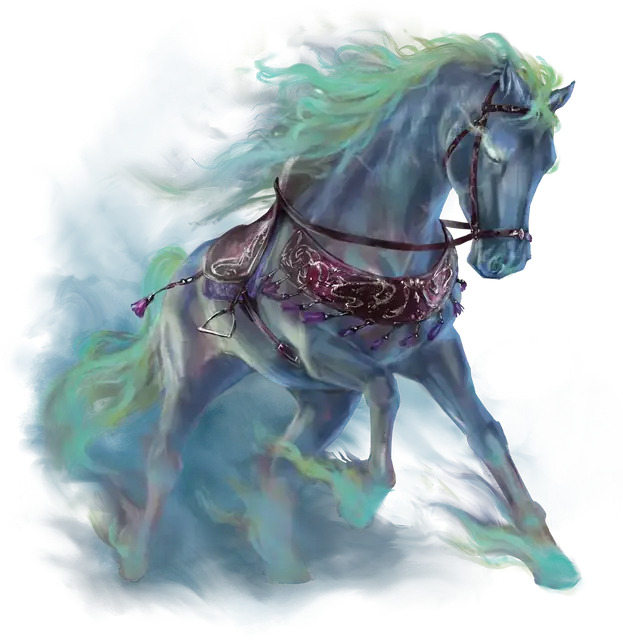

Призрачный скакун
Phantom Steed
3 уровень, Иллюзия

Время сотворения 1 минута или Ритуал
Дистанция 30 футов
Компоненты В, С
Длительность 1 час
Классы Волшебник
Подклассы Страж пустошей (Следопыт)
На полу в незанятом пространстве в пределах дистанции на ваш выбор появляется Большое полуреальное похожее на лошадь существо. Вы определяете его внешность; у него есть седло, удила и уздечка. Всё снаряжение, созданное этим заклинанием, исчезает в клубах дыма, если окажется дальше 10 футов от скакуна.
Пока заклинание действует, вы или выбранное вами существо можете ехать на скакуне верхом. Используется статистика Ездовой лошади, за исключением того, что Скорость существа — 100 футов, и оно может проскакать 13 миль за час. Когда заклинание оканчивается, скакун медленно исчезает, давая ездоку 1 минуту на спешивание. Заклинание оканчивается, если скакун получит урон.